3 Your First R Project
In this chapter, you’ll do a real single-cell RNA-seq analysis—from raw count data to identified cell types. Along the way, you’ll learn how to use Positron’s key features: the file explorer, console, environment pane, plots pane, and interactive code execution. By the end, you’ll render the analysis into a shareable HTML report.
We’ll work with a single-cell RNA-seq dataset from the freshwater sponge Spongilla lacustris, one of the organisms studied in the Musser Lab. The dataset contains about 10,000 cells across 4 samples. Don’t worry about understanding every biological detail—focus on learning how Positron works and getting comfortable running R code interactively. We’ll teach some biology along the way too.
3.1 Create a Project Folder
First, create a folder for this project and open it in Positron.
- Open Positron
- Go to File → Open Folder
- Navigate to where you want to keep projects (e.g.,
~/Documents) - Click New Folder, name it
my-first-analysis, then open it
Positron now treats this folder as your workspace. Everything you do—running code, browsing files, managing packages—happens relative to this folder.
Take a moment to look around the Positron interface:
- File Explorer (left sidebar): Shows files and folders in your project. Right now it’s empty.
- Console (bottom panel): Where your R session will run. You may need to start one—click “Start R Session” in the status bar at the bottom if you don’t see an R prompt.
- Environment pane (right panel, or bottom panel next to Console): Will show R objects as you create them. Look for the “Variables” tab.
- Plots pane: Will appear when you make your first plot.
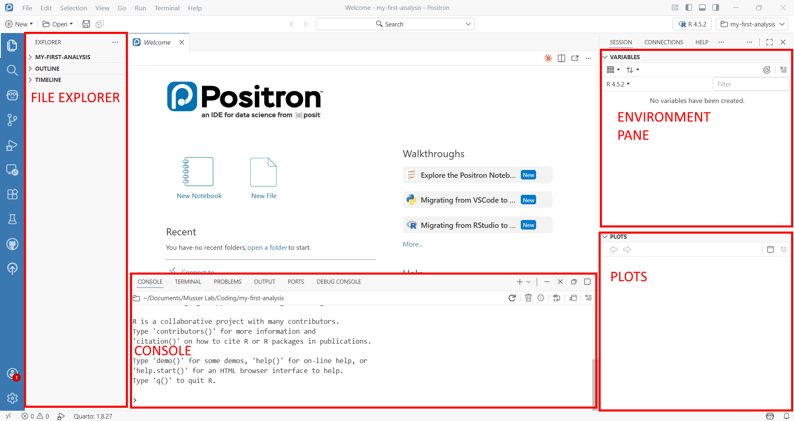
3.2 Install Packages with renv
Before we can analyze data, we need to install some R packages. We’ll use renv to manage packages for this project—renv gives each project its own package library, so installing or updating packages here won’t affect your other projects.
In the R console, type (or paste) and press Enter:
install.packages("renv")
renv::init()When renv::init() finishes, it will ask you to restart R. Do this—in Positron, you can restart by clicking the power icon in the Console toolbar, or pressing Cmd+Shift+0 (Ctrl+Shift+0 on Windows). Restarting is necessary because renv modifies your .Rprofile to activate itself when R starts, and that only takes effect after a restart.
After restarting, look at the file explorer: you should now see renv/ and renv.lock appear. The console should also show a message like “renv activated” confirming it’s working.
The lock file (renv.lock) is a snapshot of every package installed in your project, including exact version numbers. This is what makes your analysis reproducible—a collaborator (or future you) can run renv::restore() on another machine to install the exact same package versions. You’ll learn more about renv in the renv chapter.
Now install the packages we need. We use renv::install() rather than install.packages() because it understands how to install packages from multiple sources—CRAN, Bioconductor, and GitHub:
renv::install(c("Seurat", "leidenbase", "ggplot2", "patchwork", "dplyr", "here"))This takes a few minutes—Seurat has many dependencies. The leidenbase package is needed for the Leiden clustering algorithm we’ll use later. Watch the console output as packages download and compile. When it’s done, save the state:
renv::snapshot()renv::install() is the standard way to install packages in an renv project. For CRAN packages, just use the package name: renv::install("Seurat"). For Bioconductor packages (common in genomics—DESeq2, SingleCellExperiment, etc.), prefix with bioc:::
renv::install("bioc::DESeq2")After installing, always run renv::snapshot() to record the new packages in your lock file.
3.3 Get the Data and Analysis Script
We need two things: the Spongilla count matrix and the analysis script you’ll run through. Both are in the book’s GitHub repository.
3.3.1 Download from GitHub
The example data and scripts live in the examples/ folder of the lab-compute repository. The repository’s README has a description of what’s available — you need two things from it:
- The Spongilla count matrix — in
examples/data/spongilla_counts/(three files) - The analysis script —
examples/scripts/01_seurat_basics.qmd
The easiest way to get them is to download the whole repository as a ZIP file:
- Go to github.com/MusserLab/lab-compute
- Click the green Code button, then Download ZIP
- Unzip the downloaded file — you’ll find an
examples/folder inside
Now create the project folders and copy the files in. Open a terminal in your project folder (in Positron: Terminal → New Terminal, or Cmd+` / Ctrl+`).
macOS:
mkdir -p data scripts outs
cp -r ~/Downloads/lab-compute-main/examples/data/spongilla_counts data/
cp ~/Downloads/lab-compute-main/examples/scripts/01_seurat_basics.qmd scripts/Windows PowerShell:
mkdir data, scripts, outs
Copy-Item -Recurse ~\Downloads\lab-compute-main\examples\data\spongilla_counts data\
Copy-Item ~\Downloads\lab-compute-main\examples\scripts\01_seurat_basics.qmd scripts\Or do it by hand: create data/, scripts/, and outs/ folders in Positron’s File Explorer (right-click → New Folder), then drag the files from the unzipped download into the right places.
The outs/ folder is empty for now — you’ll use it later when rendering the analysis to HTML. In the lab we keep script outputs separate from source code so things stay organized.
3.3.2 What you should have
Your project should now look like this:
my-first-analysis/
├── data/
│ └── spongilla_counts/
│ ├── barcodes.tsv.gz # One barcode per cell
│ ├── features.tsv.gz # One row per gene
│ └── matrix.mtx.gz # The sparse count matrix
├── scripts/
│ └── 01_seurat_basics.qmd # The analysis you'll run
├── outs/ # Will hold script outputs
├── renv/
├── renv.lock
└── .RprofileThe three files in spongilla_counts/ are the standard 10X Genomics format—the same format you’ll get when analyzing your own single-cell data from a sequencing core. The barcodes file has one entry per cell, the features file lists every gene, and the matrix file stores the actual counts in a compressed sparse format (most gene-cell combinations are zero, so this saves a lot of space).
Look at the file explorer now. You can click into folders to browse their contents. Click into data/spongilla_counts/ to see the three files.
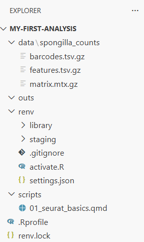
3.4 Open the Analysis Script
Open scripts/01_seurat_basics.qmd by clicking on it in the file explorer.
This is a Quarto document (.qmd)—the format we use for analyses in the lab. If you’ve used RMarkdown before, Quarto is its successor: it has the same idea of mixing code and narrative, but with more features and equal support for both R and Python. When you render a .qmd, all the code runs and the results are woven into an HTML report.
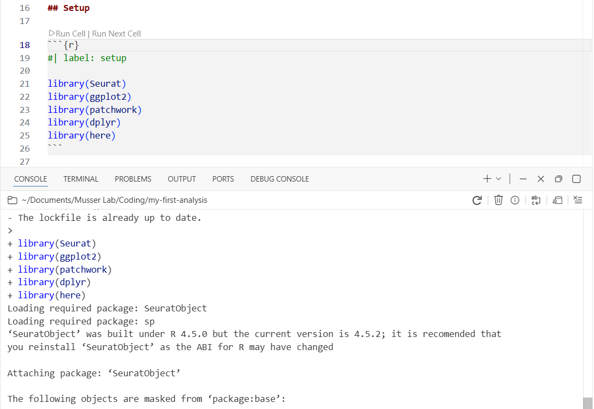
Look at the structure of the file. There are three kinds of content:
The YAML header is the block between --- marks at the top. It controls metadata—title, author, date—and rendering options like output format and whether to show code. You’ll see comments (lines starting with #) explaining what each option does. The YAML header is the first thing Quarto reads when rendering.
Markdown text is the written explanation between code chunks. Markdown is a lightweight formatting language: **bold** for bold, *italic* for italic, ## for section headings, and [link text](url) for hyperlinks. The Quarto document itself has a brief Markdown introduction at the top—read through it to get oriented.
Code chunks are blocks starting with ```{r} and ending with ```. Each chunk has options on lines starting with #|. The most important is #| label: which gives the chunk a name. Other options control things like figure captions (#| fig-cap:) and figure dimensions. The first chunk in the script has comments explaining common chunk options.
We’re going to run through this script chunk by chunk, interactively. This is how you’ll develop analyses in the lab—running code, inspecting results, and iterating before rendering the final report.
Cmd+Enter (Ctrl+Enter on Windows) runs the current line or selection in the R console. Cmd+Shift+Enter runs the entire code chunk. You’ll use these constantly during interactive development.
3.5 Step 1: Load Libraries
Find the first code chunk (labeled setup) and place your cursor inside it. Press Cmd+Shift+Enter to run the entire chunk.
library(Seurat)
library(ggplot2)
library(patchwork)
library(dplyr)
library(here)Watch the console at the bottom—you’ll see library loading messages appear there. The code runs in the console, not in the document. This is interactive execution: you’re exploring and developing, running code chunk by chunk, checking results as you go.
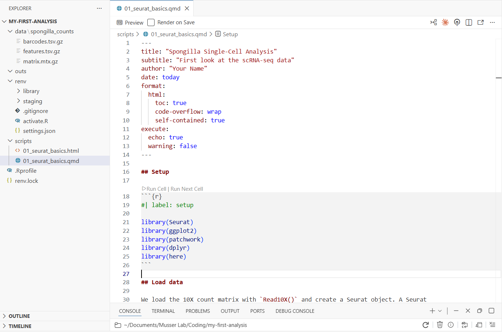
3.6 Step 2: Load the Count Matrix
Run the next chunk (load-data). This loads the 10X count matrix and creates a Seurat object—the central data structure for single-cell analysis in R. It stores the count matrix, cell metadata, dimensionality reductions, and clustering results all in one container.
counts <- Read10X(data.dir = here("data/spongilla_counts"))
sponge <- CreateSeuratObject(counts = counts, project = "spongilla")
spongeTwo things to notice:
- The console prints a summary of the Seurat object: the number of genes (features) and cells (samples) in the dataset.
- The environment pane (Variables tab) now shows two objects:
counts(a sparse matrix) andsponge(a Seurat object). You can see the object type and size at a glance.
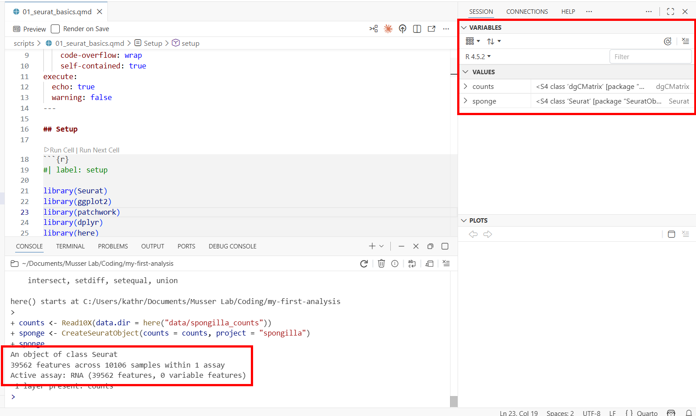
Now let’s inspect the cell metadata. Run the peek-metadata chunk—it uses head() to print the first few rows of the metadata table to the console. That’s useful for a quick look, and it’s what we use in the script because head() works when the document is rendered to HTML later.
But for interactive exploration, try typing this directly in the console:
View(sponge@meta.data)This opens Positron’s data viewer—a spreadsheet-style view of the metadata, with one row per cell. View() only works interactively (it opens a GUI pane), which is why the script uses head() instead. You’ll see three columns:
- orig.ident — which sample the cell came from
- nCount_RNA — total UMI counts per cell (how much RNA was captured)
- nFeature_RNA — number of distinct genes detected per cell
Notice two useful features of the data viewer:
- Column histograms: Each numeric column shows a small histogram at the top, giving you a quick summary of the distribution. You can immediately see the range and shape of
nCount_RNAandnFeature_RNAwithout making a plot. - Filtering: Click on a column header to filter rows. For example, you could filter
nFeature_RNAto only show cells with more than 1,000 detected genes. This is useful for quickly exploring subsets of your data.
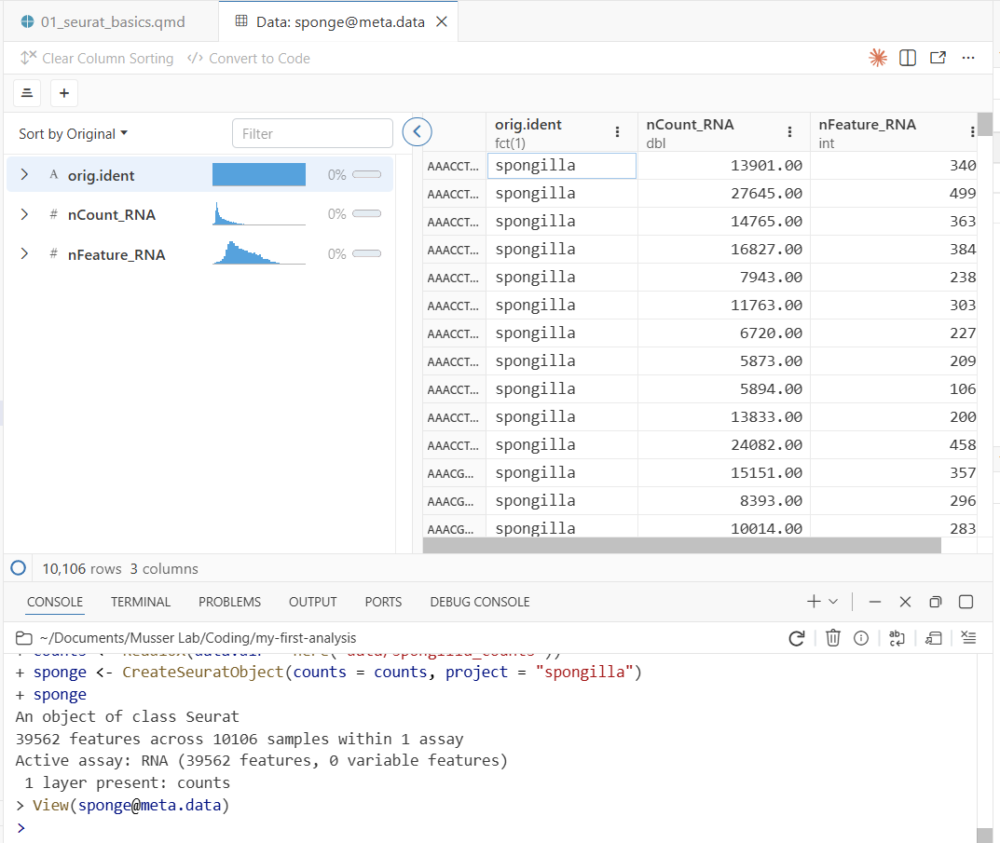
3.7 Step 3: Quality Control
Run the next chunk (fig-qc-violin). This creates violin plots of two key QC metrics:
VlnPlot(sponge, features = c("nFeature_RNA", "nCount_RNA"), ncol = 2)Your first plot appears in the Plots pane! The violin plots show the distribution of genes and UMI counts across all cells. You can resize the Plots pane by dragging its border, and use the navigation arrows to flip between plots as you make more.
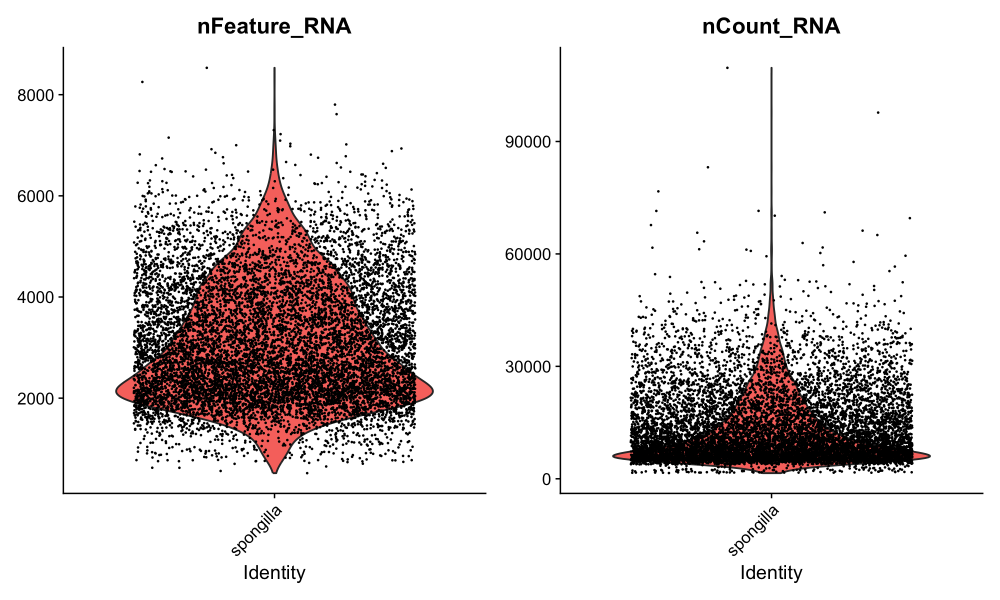
Here’s what to look for in these plots:
nCount_RNA (total UMI counts) varies naturally by cell type. Large cells or transcriptionally active cells capture more RNA, so higher counts don’t necessarily mean better quality. On the other hand, very high counts can indicate doublets—droplets that accidentally captured two cells during the 10X run, giving them roughly double the expected RNA content. Very low counts suggest empty droplets or dead cells.
nFeature_RNA (genes detected) gives a sense of library complexity. A cell with very few detected genes may not have been captured well. Differences between samples are normal and can reflect both biology and technical variation.
This dataset has already been quality-filtered, so the distributions should look clean.
If you want a larger view of a plot, you can pop the Plots pane out into a separate window. Click the pop-out icon in the top-right corner of the Plots pane. This is especially useful for complex plots where you want to see fine detail.
With raw, unfiltered data, you’d typically remove obvious junk cells—those with extremely low gene counts or extremely high counts that suggest doublets. But in practice, many experienced analysts set only very lenient thresholds at this stage, or none at all. The reason is that clustering itself is a powerful QC tool: cells with low-quality profiles often group together into their own “junk clusters” that you can remove later, after seeing how cells actually behave. This is more nuanced than applying hard cutoffs upfront, because some cells with low RNA counts are perfectly real (they’re just small or quiescent cells), and hard thresholds would throw them out.
Programs like DoubletFinder can also identify likely doublets computationally, which is more principled than a simple nCount_RNA threshold.
3.8 Step 4: Normalize and Find Variable Features
Run the normalize chunk. This does two things.
3.8.1 Normalization
NormalizeData() adjusts for differences in sequencing depth between cells. It divides each cell’s gene counts by the cell’s total UMI count to get relative expression levels, then applies a log transformation. The log transformation addresses heteroscedasticity: without it, highly expressed genes would have much higher variance than lowly expressed genes, dominating downstream analyses.
A word of caution: it’s often stated that differences in total RNA per cell are purely technical artifacts of sequencing depth. That can be true when comparing closely related cell types. But in whole-organism datasets like this one—where cells range from tiny pinacocytes to large, transcriptionally active archaeocytes—differences in total RNA abundance are genuinely biological. Normalization can flatten out real biology in these cases. This step is a useful default, but not a biological law.
Not all methods even require this step. Casey Dunn and colleagues have developed approaches that work directly in count space, avoiding the assumptions baked into log-normalization. As you gain experience, it’s worth understanding what normalization does and when alternatives might be more appropriate.
sponge <- NormalizeData(sponge)
sponge <- FindVariableFeatures(sponge, selection.method = "vst", nfeatures = 2000)3.8.2 Variable features
FindVariableFeatures() identifies the 2,000 genes whose expression varies most across cells. The idea is that genes expressed at similar levels in every cell don’t have much to say about the structure of the data—they won’t help distinguish cell types. By focusing on the most variable genes, the downstream analysis is more efficient and less noisy.
This is a reasonable heuristic, but it’s not the only approach. Methods like SAM (Self-Assembling Manifolds) take a different tack: they use all genes but weight them by how informative they are for finding structure, rather than discarding genes outright. The “select top 2,000 variable features” convention is one way to do this, not the only way.
Now run the fig-variable-features chunk to visualize the results:
top10 <- head(VariableFeatures(sponge), 10)
plot1 <- VariableFeaturePlot(sponge)
plot2 <- LabelPoints(plot = plot1, points = top10, repel = TRUE)
plot2A new plot appears in the Plots pane showing genes ranked by variability. The labeled points are the top 10 most variable genes. Use the navigation arrows in the Plots pane to flip between this plot and the earlier violin plot.
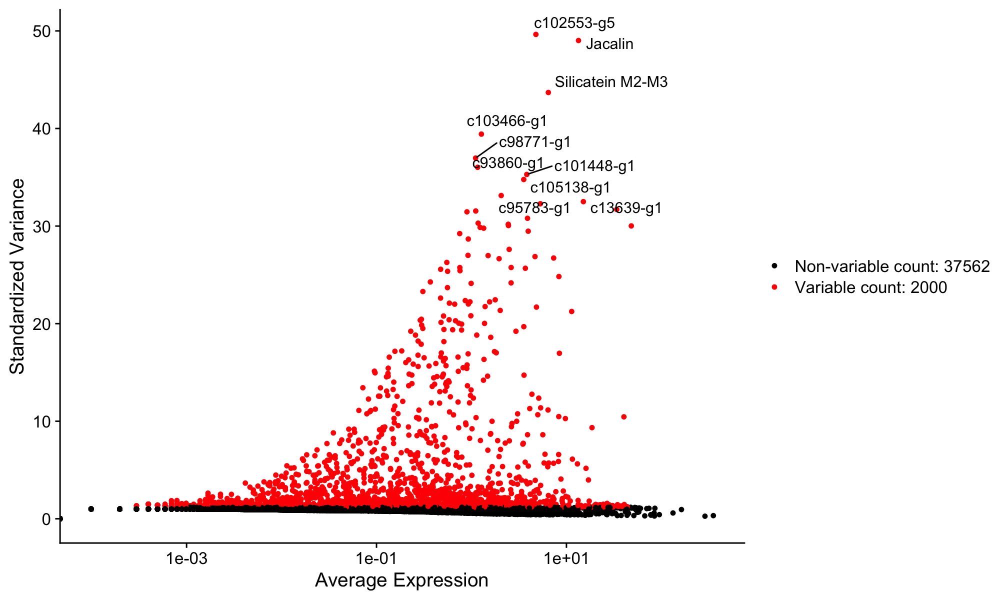
3.9 Step 5: Scale Data and Run PCA
Run the scale-pca chunk:
sponge <- ScaleData(sponge)
sponge <- RunPCA(sponge)Scaling shifts each gene to have mean 0 and variance 1. Together with the log normalization from the previous step, this ensures that both lowly and highly expressed genes contribute equally to the analysis. PCA (Principal Component Analysis) then reduces the data from thousands of genes down to a smaller number of dimensions (principal components) that capture the main axes of variation.
Scaling followed by PCA is the standard Seurat workflow and a reasonable starting point for most datasets. Other approaches exist—for example, SAM (Self-Assembling Manifolds) skips the variable feature selection and PCA steps entirely and can work well, particularly for complex datasets. The Seurat pipeline is one well-established starting point, but it’s worth knowing that alternatives exist and may be better suited to your particular data.
Now run the fig-elbow chunk to see the elbow plot:
ElbowPlot(sponge, ndims = 50)The elbow plot shows how much variation each PC explains. We need to choose how many PCs to use for clustering. The “elbow”—where the curve flattens—gives a rough guide, but in practice we often include more PCs than the elbow alone might suggest. The reason: later PCs can capture variation from rare cell types that would be missed with too few dimensions. Using too few PCs has a real cost—clusters that should be separate may merge together, and you’ll miss biology. We’ll use 40 PCs for this dataset, which is deliberately generous.
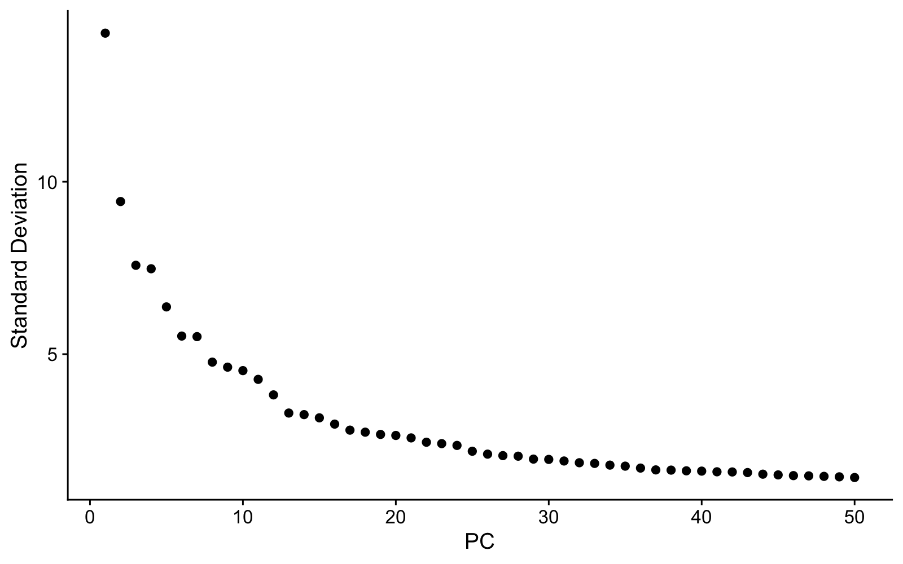
3.10 Step 6: Cluster Cells
Run the cluster chunk. This is the most computationally intensive step—it takes a moment.
sponge <- FindNeighbors(sponge, dims = 1:40)
sponge <- FindClusters(sponge, resolution = 2, algorithm = 4)
sponge <- RunUMAP(sponge, dims = 1:40)Three things happen here:
- FindNeighbors builds a graph connecting cells with similar expression profiles (using the first 40 PCs).
- FindClusters uses the Leiden algorithm to find communities of similar cells in that graph.
- RunUMAP projects the high-dimensional relationships into two dimensions for visualization.
When it finishes, check the environment pane—the sponge object now contains clustering results and UMAP coordinates. Run View(sponge@meta.data) again to see a new seurat_clusters column in the metadata.
- dims = 1:40 — uses the first 40 PCs. We deliberately include more than the elbow suggests to catch rare cell types.
- resolution = 2 — higher values produce more clusters. The right resolution depends on how many cell types you expect and how finely you want to split them.
- algorithm = 4 — Leiden algorithm, which generally produces more robust clusters than the default Louvain (algorithm = 1).
3.11 Step 7: Visualize with UMAP
Run the fig-umap chunk:
DimPlot(sponge, reduction = "umap", label = TRUE) + NoLegend()The UMAP is one of many ways to look at single-cell data. Each dot is a cell, colored by cluster, and cells that are close together have similar gene expression. It’s a useful 2D summary of relationships among thousands of genes, but it’s important not to over-interpret distances or shapes—UMAP is a visualization tool, not an analysis endpoint. The real work is figuring out what each cluster is, which we’ll do next.

3.12 Step 8: Explore Gene Expression
Run the fig-features chunk:
FeaturePlot(sponge, features = c("Eef1a1 A", "Pcna"))This overlays gene expression onto the UMAP—each cell is colored by how strongly it expresses that gene. Eef1a1 is an elongation factor that marks archaeocytes (the stem cell-like cells of sponges), and Pcna is a proliferation marker (it labels cells that are actively dividing). Notice how expression is concentrated in specific clusters, not spread uniformly. This is what makes these genes useful as markers for identifying cell types.
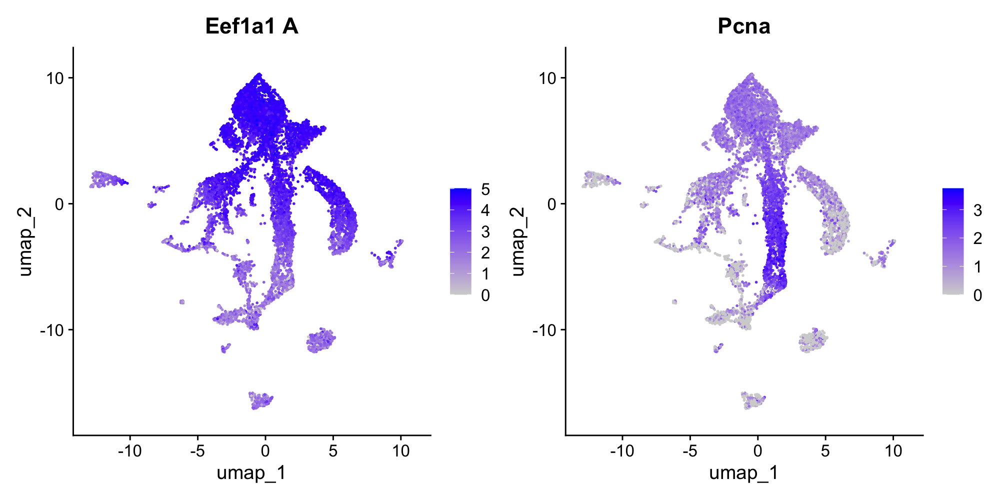
3.13 Step 9: Identify Cell Types
Now the interesting part: figuring out what each cluster actually is. There are two complementary approaches, and you’ll typically use both.
3.13.1 Approach 1: Unbiased differential expression
We can ask which genes are most enriched in a given cluster compared to all other cells. This is unbiased—we let the data tell us what’s distinctive about a cluster without assuming anything in advance.
Run the de-cluster1 chunk to find markers for the largest cluster (cluster 1):
markers_c1 <- FindMarkers(sponge, ident.1 = 1, min.pct = 0.25)
head(markers_c1, 20)The output shows genes ranked by statistical significance, with columns for log fold-change, detection rates, and adjusted p-values. Scroll through the top genes and look for patterns—are there gene families that keep coming up?
Now run the fig-dotplot-c1 chunk to visualize these markers across all clusters:
top_genes <- rownames(head(markers_c1, 15))
DotPlot(sponge, features = top_genes, scale = F, cols = "RdBu") + RotatedAxis() + coord_flip()In the dot plot, dot size shows what fraction of cells in each cluster express the gene, and dot color shows average expression level. Look for genes that are strongly expressed in cluster 1 but absent or low in most other clusters.
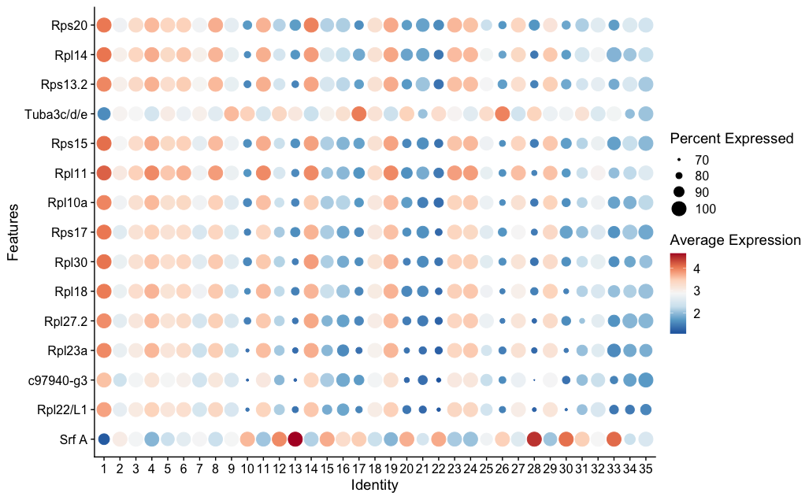
You’ll see ribosomal genes (names starting with Rpl or Rps) dominating the top markers. This signature—high ribosomal gene expression indicating active protein synthesis—is characteristic of archaeocytes. Archaeocytes are the stem cell-like cells of sponges, and similar transcriptional profiles mark stem cells in many invertebrates.
3.13.2 Approach 2: Candidate genes
The complementary strategy is to take genes you already know something about and look at where they’re expressed. This is the candidate gene approach.
Piwi genes are highly conserved markers of stem cells and germline across animals. If archaeocytes are truly stem cell-like, they should express Piwi. Run the find-piwi chunk to search for it:
grep("iwi", rownames(sponge), value = TRUE, ignore.case = TRUE)This is a useful trick—when you don’t know the exact gene name in a dataset, grep() lets you search by partial match. You should see Piwil2 and Piwil1/3/4 in the results. Now run the fig-piwi chunk to see where Piwil2 is expressed:
p1 <- VlnPlot(sponge, features = "Piwil2", pt.size = 0.1)
p2 <- FeaturePlot(sponge, features = "Piwil2")
p1 + p2The VlnPlot shows which clusters express Piwil2 most strongly. The FeaturePlot shows where those cells sit on the UMAP. If Piwil2 expression is concentrated in the same cluster that showed the ribosomal signature in the DE analysis, that’s convergent evidence: two independent approaches pointing to the same biological identity.
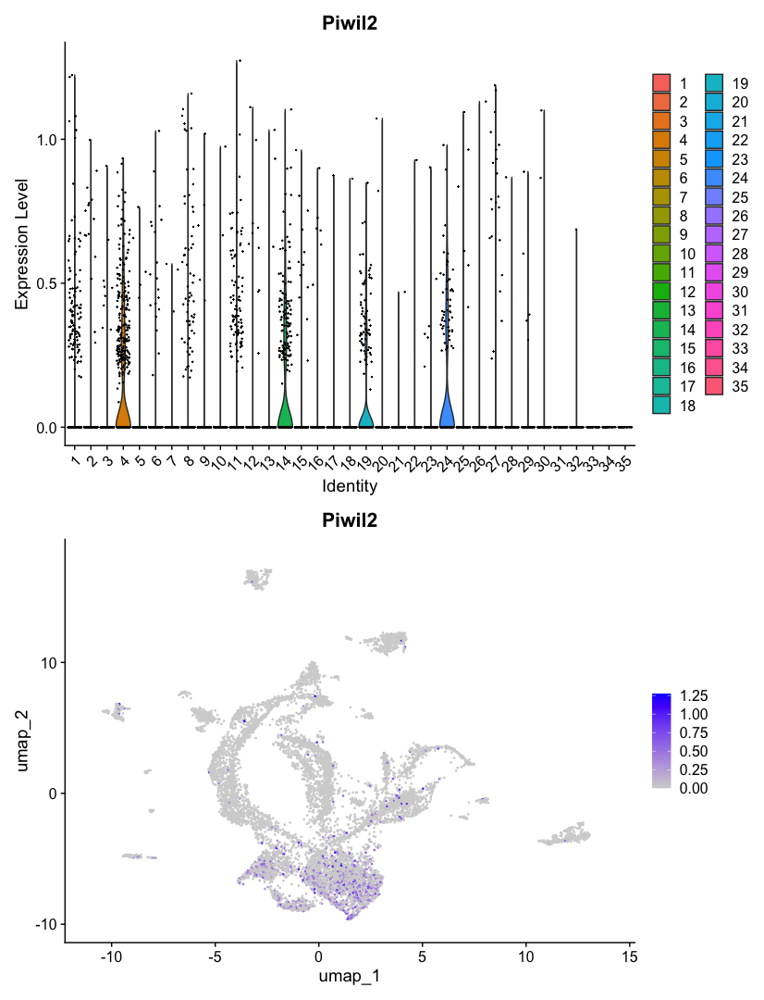
This two-pronged strategy—unbiased differential expression to discover what’s distinctive, plus candidate genes to confirm identity—is a standard approach for annotating clusters in single-cell data.
3.14 Render the Document
So far you’ve been running code interactively—chunk by chunk, with results appearing in the console, environment pane, and plots pane. This is how you develop and explore.
Now let’s render the document. Rendering runs every code chunk in a fresh R session from top to bottom, and produces a polished HTML report. This is important because:
- It proves the analysis is reproducible—it runs start to finish without relying on objects you created interactively
- It catches errors you might miss during interactive development (like relying on a variable you defined in the console but forgot to include in the script)
- It produces a shareable document with all code, results, and narrative together
Open the terminal (Cmd+` or Ctrl+`) and run:
quarto render scripts/01_seurat_basics.qmd
mkdir -p outs/01_seurat_basics
mv scripts/01_seurat_basics.html outs/01_seurat_basics/The first command renders the document—Quarto re-executes all your R code from scratch. Then we move the HTML output into the outs/ folder, following the lab convention of keeping script outputs separate from source code. In Part 2, you’ll learn about additional conventions for this folder, like BUILD_INFO.txt files that track which code version produced each output. For now, just getting the output into the right place is enough. When it finishes, open outs/01_seurat_basics/01_seurat_basics.html in your browser to see the full analysis as a formatted report—code, plots, and your written explanations all together.
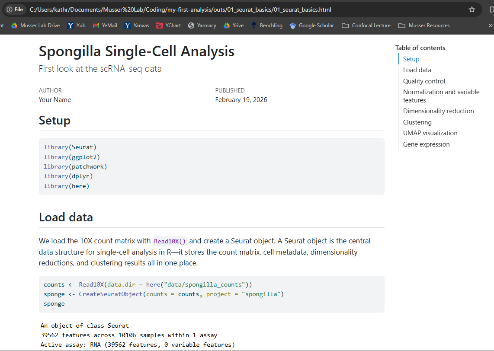
During development, work interactively—run chunks, inspect objects, iterate. When you’re satisfied, render to confirm everything runs cleanly and to produce the final report. If rendering fails, the error messages tell you where the problem is.
3.15 What You’ve Learned
You’ve now used all of Positron’s key features:
| Feature | What you used it for |
|---|---|
| File Explorer | Browsing project files, seeing data and output structure |
| Console | Running R code interactively, seeing output and messages |
| Environment pane | Inspecting R objects—their types, sizes, and contents |
| Data Viewer | Examining cell metadata with filtering and column histograms |
| Plots pane | Viewing violin plots, UMAP, feature plots, dot plots (with pop-out) |
| Terminal | Running quarto render to produce the HTML report |
And you’ve run a single-cell analysis from start to finish:
- Loaded a 10X count matrix into a Seurat object
- Inspected QC metrics to check data quality across samples
- Normalized and identified highly variable genes
- Scaled, ran PCA, and chose dimensions with an elbow plot
- Clustered cells with the Leiden algorithm
- Visualized clusters on a UMAP and explored gene expression
- Identified cell types using both unbiased differential expression and candidate gene markers
This is the starting point for single-cell analysis in the lab. The tools and workflow you’ve practiced here—interactive development in Positron, Quarto for reproducible reports, Seurat for analysis—are what you’ll use for your own projects.
3.16 Try Claude Code
You installed Claude Code in the previous chapter. Now that you have a real project with real data, try it out. Open the Claude Code panel in Positron’s sidebar (or run claude in the terminal).
Sponges don’t have canonical muscles, but the flat epithelial cells covering the sponge surface—pinacocytes—have been described to express muscle-related genes like myosins. Let’s explore this with Claude Code:
Claude Code can read your project files, understand your analysis, and write R code in context.
I’m analyzing Spongilla single-cell data with Seurat. Can you find all myosin genes in the dataset (search for “Myh” and “Myl” in the gene names) and make FeaturePlots and VlnPlots for any that show interesting expression patterns? The Seurat object is called
sponge.
Claude will search the gene names in your Seurat object, identify the myosin genes present, check their expression patterns, and create plots of the ones that show cluster-specific expression—all without you needing to write the R code yourself.
Try the prompts in these orange boxes as you encounter them throughout the book—Claude Code works best when you give it specific context about what you’re working on.
3.17 What’s Next
- Part 2 dives deeper into each tool: the Positron chapter covers more features and keyboard shortcuts, the Quarto chapter covers document syntax and options, and the Project Organization chapter explains the lab’s conventions for structuring projects.
- The Workflows section shows how to set up a full lab project with Git, conda, proper folder structure, and GitHub—the production infrastructure you’ll use for real analyses.